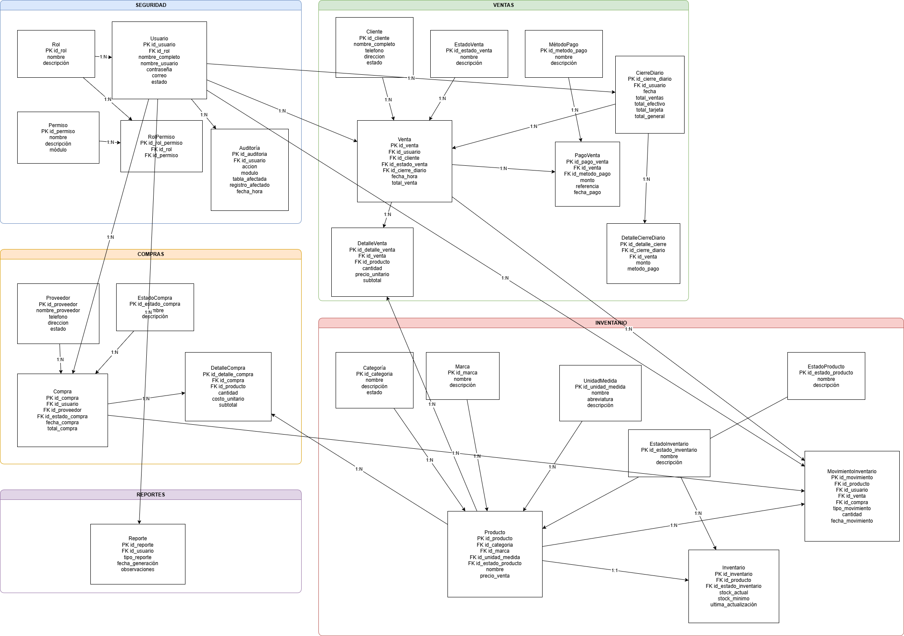

Modelo de información
Entidad - relación
El modelo ER conecta productos, ventas, compras, inventario, usuarios y cierre diario para sostener el comportamiento funcional definido en el resto del proyecto.

Diagrama exportado del modelo base de datos conceptual del proyecto.
Entidades principales
| Entidad | Rol en el sistema |
|---|---|
| Producto | Catálogo de artículos comercializados. |
| Inventario | Existencias actuales por producto. |
| MovimientoInventario | Trazabilidad de entradas, salidas y ajustes. |
| Venta / DetalleVenta | Transacciones comerciales y sus productos asociados. |
| Compra / DetalleCompra | Abastecimiento y reposición desde proveedores. |
| CierreDiario | Consolidación administrativa del día. |
| Usuario / Rol | Control de acceso y privilegios. |